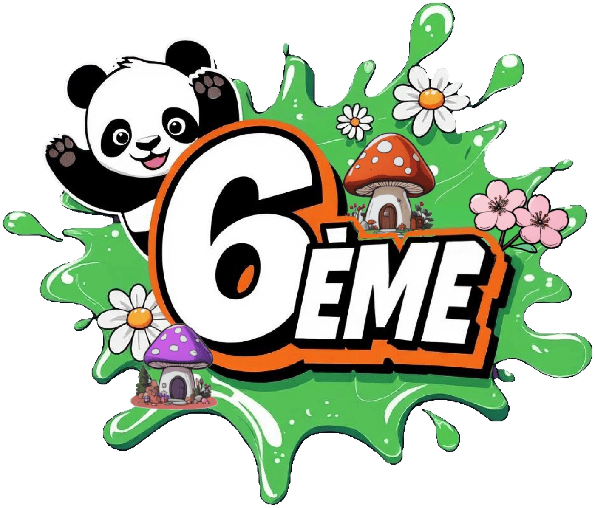
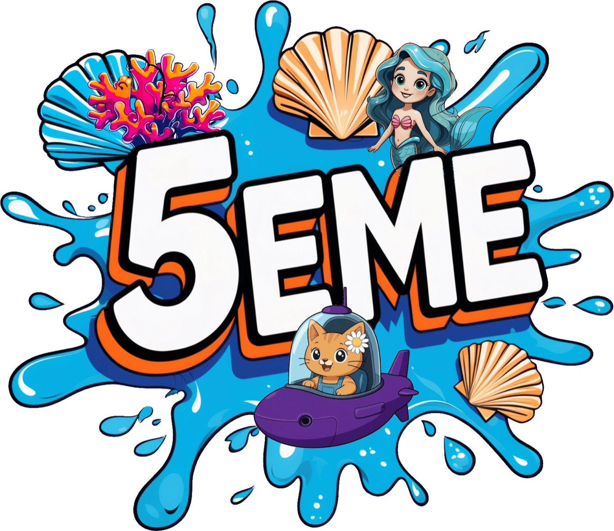
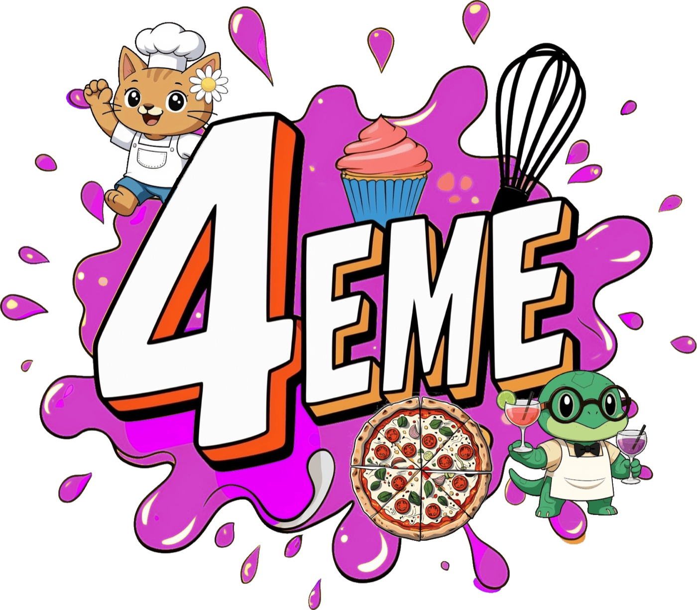
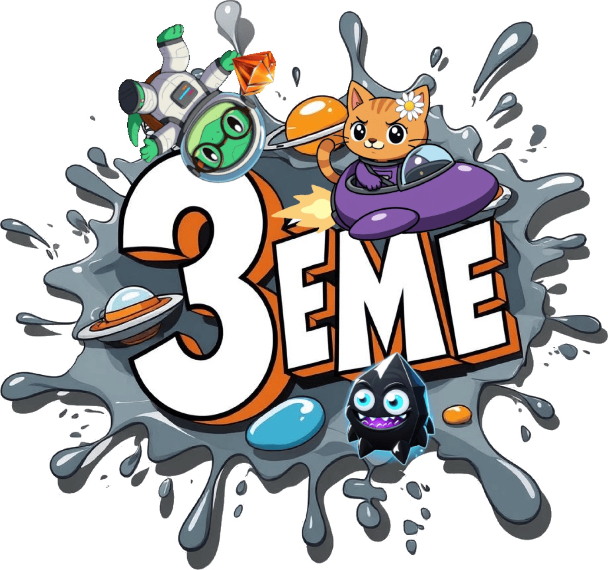

Les 5 mondes
Huit à seize ceintures par monde. QCM, calculs, équations, exercices Scratch. Modes Simple et Pro. Les chapitres ci-dessous sont ceux affichés dans le shop de l’app.
Calcul mental
Calcul Mental — Pyramides d’Égypte
Infiltrez les pyramides millénaires avec Euclide et Pénélope ! Après avoir libéré par mégarde le Cœur des Ténèbres en volant la calculette d’or de la reine Pénélope Ier, affrontez momies et serpents maléfiques dans un mini-jeu explosif de type Pyramides !
Mini-jeu : Mummy Jump — Pénélope bondit par-dessus les pièges. Saute. Calcule. Enchaîne.
Chapitres disponibles
Addition & Soustraction- Soustractions
- Calcul posé
- Décimales
- Astuces
Multiplication- Tables
- Calcul posé
- Astuces
- Avancées
Numération- Arrondir
- Vocabulaire
- Conversions
- Comparaisons
Division- Pourcentages
- Divisions
- Fractions
6e

6ème — Forêt Enchantée
Pénélope s’est blessée ! Parcourez la forêt kawaii pour récolter plume d’éléphant, œufs de scarabée, bave de crapaud et noisettes… mais un raton laveur vole tout ! Poursuite en kart endiablé dans le mini-jeu pour récupérer les ingrédients et sauver Pénélope !
Mini-jeu : Catch Cure — rattraper les ingrédients qui tombent.
Chapitres disponibles
Nombres, calcul et résolution de problèmes- Nombres entiers et décimaux
- Les fractions
- Algèbre
La proportionnalité- Pourcentages
- Proportionnalité
Organisation et gestion de données et probabilités- Les probabilités
- Organisation et gestion de données
Initiation à la pensée informatique
Grandeurs et mesures- Les longueurs
- Les aires
- Le repérage dans le temps et les durées
Espace et géométrie- La vision dans l’espace
- Étude de configurations planes
5e

5ème — Abysses Sous-Marins
Les coquillages ne s’ouvrent plus ! Plongez avec Euclide et Pénélope pour démasquer Vorax, le requin mégalo qui terrorise l’océan. Combat naval en sous-marin avec torpilles mathématiques dans le mini-jeu pour enfermer définitivement ce tyran des mers !
Mini-jeu : Pénélope Sea Fury — combat sous-marin, thème océan.
Chapitres disponibles
Nombres- Divisibilité
- Arithmétique
- PGCD & PPCM
- Priorités
- Fractions
- Relatifs
Algèbre- Expressions
- Équations
- Développement
Géométrie- Vocabulaire
- Angles
- Triangles
- Raisonnement
- Mesures
- Symétries
- Repérage
Organisation et gestion de données
Programmation- Calculs
- Géométrie
- Animations
- Conditions
4e

4ème — Restaurant Parisien
Le resto chic de Pénélope est saboté par le Burger Infernal et ses acolytes ! Incendies, plats échangés, ketchup partout… Gérez pourcentages et mesures dans un rush culinaire infernal pour démasquer et vaincre ce monstre gastronomique !
Mini-jeu : Pénélope’s Hell Kitchen — assemble les commandes.
Chapitres disponibles
Nombres- Relatifs
- Fractions
- Arithmétique
Algèbre- Factorisation
- Développement
- Équations
Géométrie- Quadrilatères
- Triangles
- Aires
Proportionnalité- Statistiques
- Proportionnalité
3e

3ème — Espace Infini
Course aux pierres cosmiques à travers l’univers ! Récupérez émeraude, cornaline, améthyste, topaze, saphir et rubis avant le Cœur des Ténèbres. Bataille finale épique en Space Invaders où Euclide et Pénélope deviennent géants pour pulvériser le mal !
Mini-jeu : Space Miaou-Miaou. Automatismes 3e (Premium) : épreuve type brevet et entraînement par thème (~2 000 questions).
Chapitres disponibles
Fonctions- Calculs
- Graphiques
- Vocabulaire
Géométrie- Triangles
- Transformations
- Grandeurs et mesures
Statistique et probabilités- Probabilités
- Statistiques
- Pourcentages
Algèbre- Factorisations
- Développements
- Équations
Nombres- Arithmétique
- Notation scientifique
- Calculs
- Fractions